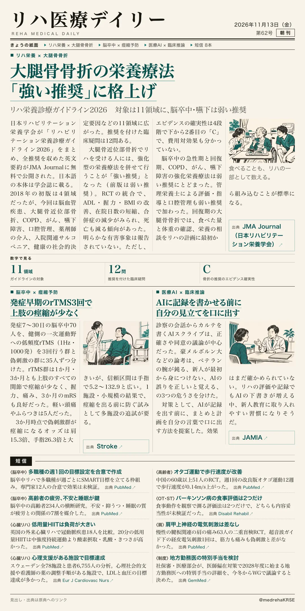
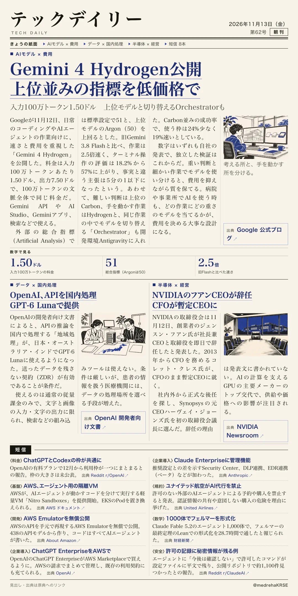

リハ医療デイリー
大腿骨骨折の栄養療法「強い推奨」に格上げ
リハ栄養診療ガイドライン2026 対象は11領域に、脳卒中・嚥下は弱い推奨
日本リハビリテーション栄養学会が全推奨の英文要約を公開した。

テックデイリー
Gemini 4 Hydrogen公開 上位並みの指標を低価格で
入力100万トークン1.50ドル 上位モデルと切り替えるOrchestratorも
Googleが日常の作業向けの速いモデルを出した。

リハ栄養診療ガイドライン2026 対象は11領域に、脳卒中・嚥下は弱い推奨
日本リハビリテーション栄養学会が全推奨の英文要約を公開した。

入力100万トークン1.50ドル 上位モデルと切り替えるOrchestratorも
Googleが日常の作業向けの速いモデルを出した。
